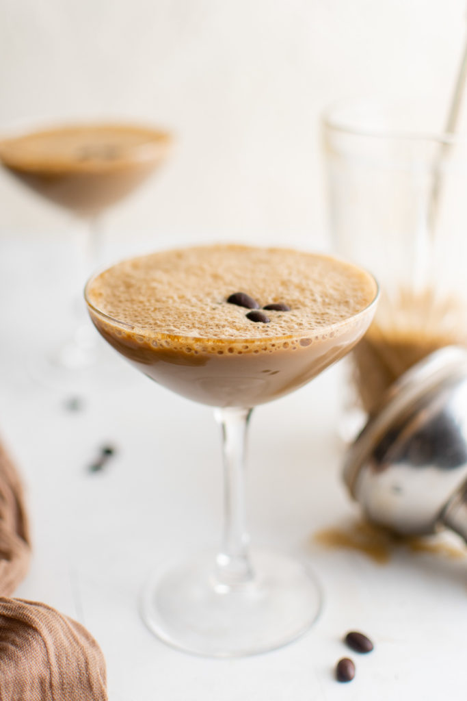

Espresso Martini

Description
An espresso martini is a coffee cocktail made with espresso, coffee liqueur, Irish cream, and a dash of simple syrup.
It’s sweet and rich, with a bold coffee flavor coming from the coffee liqueur and brewed espresso.
Espresso martinis are popular because they only take a few minutes to make!
Simply add all of the ingredients to a cocktail shaker along with cold ice cubes.
Shake it up until all of the ingredients are combined, and pour into a chilled martini glass.
Ingredients
- 1/2 cup ice cubes
- 6 ounces chilled espresso
- 2 ounces Irish cream liquor
- 1 ounce coffee liquor
- 1 ounce simple syrup
Steps
- Add the ice to a cocktail shaker then add the espresso, Irish cream liqueur, coffee liqueur, and simple syrup.
- Shake for 20-30 seconds or until it starts to foam up.
- Strain into a martini glass. Then, scoop out some of the foam, and float it on top of the martini. Garnish with coffee beans if desired and serve chilled.